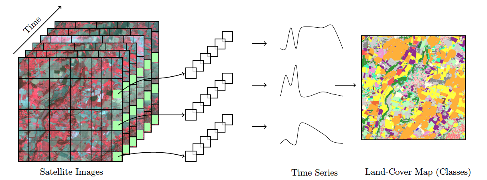
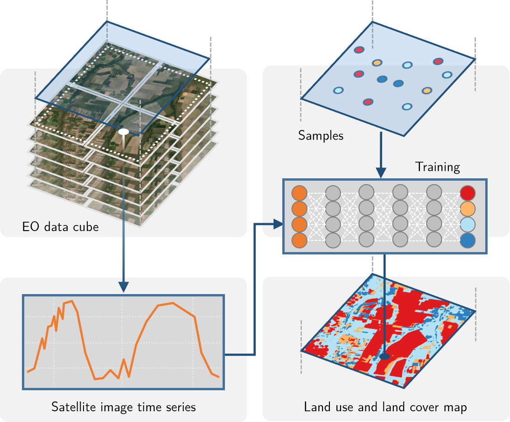
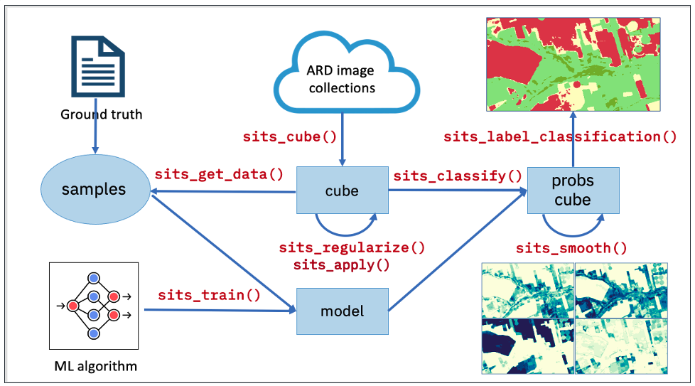

The Basics of SITS
Who is this book for?
This book, tailored for land use change experts and researchers, is a practical guide that enables them to analyze big Earth observation data sets. It provides readers with the means to produce high-quality maps of land use and land cover, guiding them through all the steps to achieve good results. Given the natural world’s complexity and the huge variations in human-nature interactions, only local experts who know their countries and ecosystems can extract full information from big EO data.
One group of readers that we are keen to engage with is the national authorities on forestry, agriculture, and statistics in developing countries. We aim to foster a collaborative environment where they can use EO data to enhance their national land use and cover estimates, supporting sustainable development policies. To achieve this goal, sits has strong backing from the FAO Expert Group on the Use of Earth Observation data (FAO-EOSTAT). FAO-EOSTAT is at the forefront of using advanced EO data analysis methods for agricultural statistics in developing countries [1], [2].
Why work with satellite image time series?
Satellite imagery provides the most extensive data on our environment. By encompassing vast areas of the Earth’s surface, satellite images enable researchers to analyze local and worldwide transformations. By observing the same location multiple times, satellites provide data on environmental changes and survey areas that are difficult to observe from the ground. Given its unique features, images offer essential information for many applications, including deforestation, crop production, food security, urban footprints, water scarcity, and land degradation. Using time series, experts improve their understanding of ecological patterns and processes. Instead of selecting individual images from specific dates and comparing them, researchers track change continuously [3].
Time-first, space-later
“Time-first, space-later” is a concept in satellite image classification that takes time series analysis as the first step for analyzing remote sensing data, with spatial information being considered after all time series are classified. The time-first part brings a better understanding of changes in landscapes. Detecting and tracking seasonal and long-term trends becomes feasible, as well as identifying anomalous events or patterns in the data, such as wildfires, floods, or droughts. Each pixel in a data cube is treated as a time series, using information available in the temporal instances of the case. Time series classification is pixel-based, producing a set of labeled pixels. This result is then used as input for the space-later part of the method. In this phase, a smoothing algorithm improves the results of the time-first classification by considering the spatial neighborhood of each pixel. The resulting map thus combines both spatial and temporal information.
Land use and land cover
The UN Food and Agriculture Organization defines land cover as “the observed biophysical cover on the Earth’s surface” [5]. Land cover can be observed and mapped directly through remote sensing images. In FAO’s guidelines and reports, land use is described as “the human activities or purposes for which land is managed or exploited.” Although land cover and land use denote different approaches for describing the Earth’s landscape, in practice there is considerable overlap between these concepts [6]. When classifying remote sensing images, natural areas are classified using land cover types (e.g., forest), while human-modified areas are described with land use classes (e.g., pasture).
One of the advantages of using image time series for land classification is its capacity to measure changes in the landscape related to agricultural practices. For example, the time series of a vegetation index in an area of crop production will show a pattern of minima (planting and sowing stages) and maxima (flowering stage). Thus, classification schemas based on image time series data can be richer and more detailed than those associated only with land cover. In what follows, we use the term “land classification” to refer to image classification representing both land cover and land use classes.
How SITS works
The sits package uses satellite image time series for land classification, using a time-first, space-later approach. In the data preparation part, collections of big Earth observation images are organized as data cubes. Each spatial location of a data cube is associated with a time series. Locations with known labels are used to train a machine learning algorithm, which classifies all time series of a data cube, as shown in Figure 2.

The sits API is a set of functions that can be chained to create a workflow for land classification. At its heart, the sits package has eight functions, as shown in Figure 3:
- Extract data from an analysis-ready data (ARD) collection using
sits_cube(), producing a non-regular data cube object. - From a non-regular data_cube create a regular one, using
sits_regularize(). Regular data cubes are required to train machine learning algorithms. - Obtain new bands and indices with operations on regular data cubes with
sits_apply(). - Given a set of ground truth values in formats such as CSV or SHP and a regular data cube, use
sits_get_data()to obtain training samples containing time series for selected locations in the training area. - Select a machine learning algorithm and use
sits_train()to produce a classification model. - Given a classification model and a regular data cube, use
sits_classify()to get a probability data cube, which contains the probabilities for class allocation for each pixel. - Remove outliers in a probability data cube using
sits_smooth(). - Use
sits_label_classification()to produce a thematic map from a smoothed probability cube.

Each workflow step corresponds to a function of the sits API, as shown in the table below. These functions have convenient default parameters and behaviors. A single function builds machine learning (ML) models. The classification function processes big data cubes with efficient parallel processing. Since the sits API is simple to learn, achieving good results does not require in-depth knowledge about machine learning and parallel processing.
| API_function | Inputs | Output |
|---|---|---|
| sits_cube() | ARD image collection | Non-regular data cube |
| sits_regularize() | Non-regular data cube | Regular data cube |
| sits_apply() | Regular data cube | Regular data cube with new bands and indices |
| sits_get_data() | Regular data cube and sample locations | Time series samples |
| sits_train() | Time series and ML method | ML classification model |
| sits_classify() | ML classification model and regular data cube | Probability cube |
| sits_smooth() | Probability cube | Smoothed probability cube |
| sits_label_classification() | Smoothed probability cube | Classified map |
Additional functions in SITS
In addition to the eight basic functions of its API, sits supports additional tools for improving training data quality and evaluating classification results. They include:
- Performing quality control and filtering on the time series samples.
- Merging multi-source data to capture responses from different sensors.
- Measuring classification uncertainty to support active learning.
- Supporting vector data cubes and object-based time series image analysis.
- Evaluating the accuracy of the classification using best practices.
These functions are also described in this book.
References
[1]
L. De Simone and P. Gennari, “Earth observations for official crop statistics in the context of scarcity of in-situ data,” Statistical Journal of the IAOS, vol. 38, no. 3, pp. 1009–1019, 2022, doi: 10.3233/SJI-220054.
[2]
L. De Simone, W. Ouellette, and P. Gennari, “Operational Use of EO Data for National Land Cover Official Statistics in Lesotho,” Remote Sensing, vol. 14, no. 14, p. 3294, 2022, doi: 10.3390/rs14143294.
[3]
C. E. Woodcock, T. R. Loveland, M. Herold, and M. E. Bauer, “Transitioning from change detection to monitoring with remote sensing: A paradigm shift,” Remote Sensing of Environment, vol. 238, p. 111558, 2020, doi: 10.1016/j.rse.2019.111558.
[4]
C. W. Tan, G. I. Webb, and F. Petitjean, “Indexing and classifying gigabytes of time series under time warping,” in Proceedings of the 2017 SIAM International Conference on Data Mining (SDM), Society for Industrial and Applied Mathematics, 2017, pp. 282–290.
[5]
A. Di Gregorio, “Land Cover Classification System - Classification concepts Software version 3,” FAO, 2016.
[6]
A. J. Comber, R. A. Wadsworth, and P. F. Fisher, “Using semantics to clarify the conceptual confusion between land cover and land use: The example of forest,” Journal of Land Use Science, vol. 3, no. 2–3, pp. 185–198, 2008.